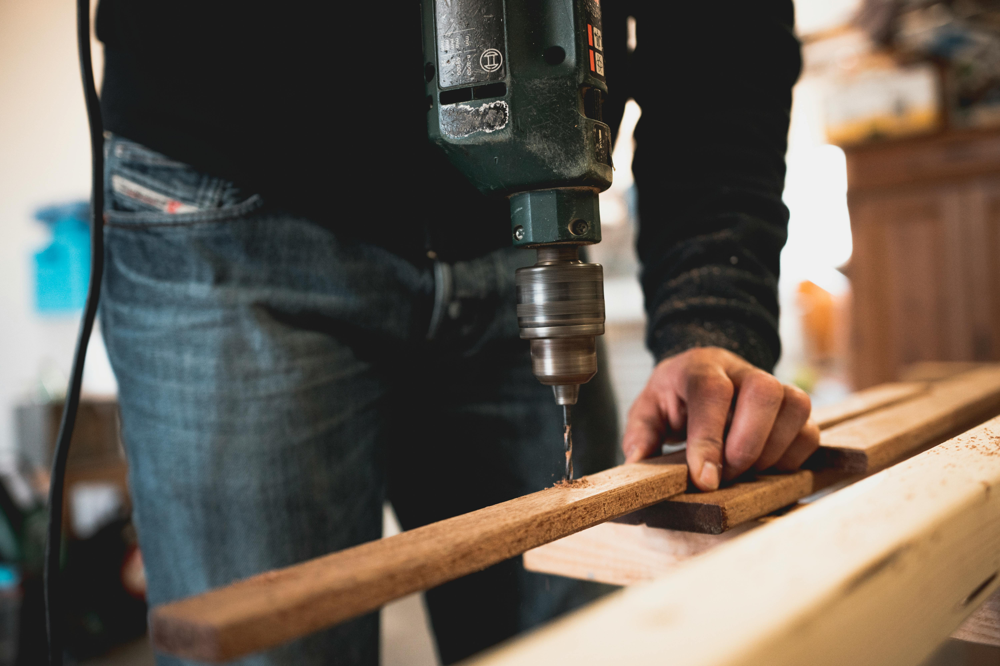
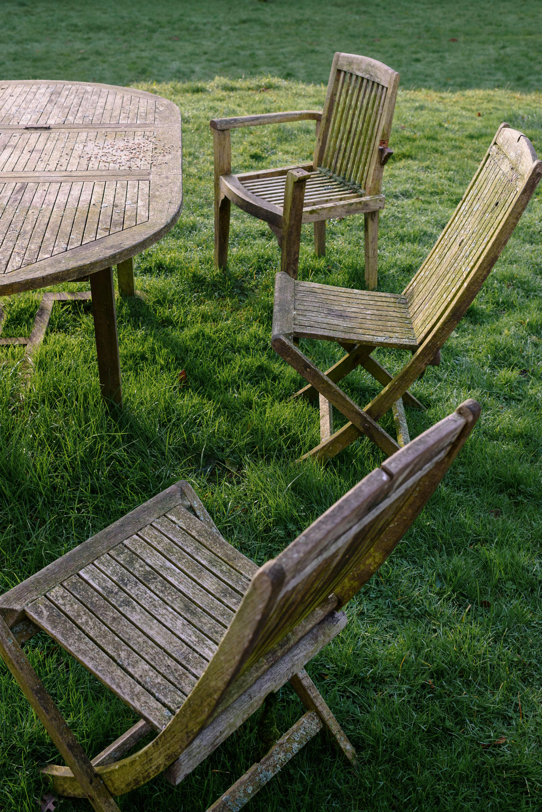

Kim jesteśmy?
Firma XYZ to rodzinna firma stolarska, która od lat dostarcza swoim klientom produkty o najwyższej jakości. Nasze doświadczenie w stolarstwie to połączenie pasji, tradycji i nowoczesnych technologii. Jesteśmy zespołem ludzi, dla których praca z drewnem to nie tylko zawód, ale prawdziwe powołanie. Każdy projekt, który realizujemy, traktujemy indywidualnie, a do każdego zlecenia podchodzimy z pełnym zaangażowaniem. Nasze usługi są efektem setek godzin pracy, doskonalenia warsztatu i poszukiwania najlepszych rozwiązań dla naszych klientów.
Naszym celem jest tworzenie mebli, które będą zarówno funkcjonalne, jak i piękne. Przykładamy ogromną wagę do detali i precyzyjnego wykonania, ponieważ wierzymy, że to właśnie w nich tkwi prawdziwa wartość naszych produktów. Współpracujemy z najlepszymi dostawcami drewna, co pozwala nam gwarantować długowieczność naszych mebli. Od lat dbamy o to, by każdy nasz projekt spełniał oczekiwania nawet najbardziej wymagających klientów.
Jako firma z wieloletnią tradycją, stawiamy na ciągły rozwój i innowacje. Dzięki inwestycjom w nowoczesne maszyny i narzędzia jesteśmy w stanie zrealizować najbardziej skomplikowane projekty, zachowując przy tym tradycyjne techniki stolarskie. Nasze prace łączą w sobie zarówno elegancję klasyki, jak i nowoczesne trendy, dzięki czemu nasze meble pasują do każdego wnętrza.
Zapraszamy do kontaktu i współpracy – z nami Twoje wnętrze stanie się miejscem pełnym charakteru, funkcjonalności i wyjątkowego stylu.

Nasza oferta
Meble na wymiar
Tworzymy meble na wymiar, które są perfekcyjnie dopasowane do Twojego wnętrza, zarówno pod względem stylu, jak i funkcjonalności. Każdy projekt zaczynamy od dokładnych pomiarów, aby stworzyć produkt, który będzie idealnie wpasowywał się w dostępną przestrzeń. Niezależnie od tego, czy potrzebujesz eleganckiej szafy, przestronnej garderoby, funkcjonalnego biurka czy praktycznych mebli kuchennych – nasze meble są wykonane z najlepszych materiałów, zapewniających trwałość na lata. Współpracujemy z klientami, oferując im pełne wsparcie przy wyborze odpowiednich materiałów, kolorów i wykończenia.
Każdy element mebli produkowanych na wymiar jest dokładnie opracowany i dopasowany do indywidualnych potrzeb. Oferujemy szeroki wybór drewna, oklein, lakierów i innych materiałów, które pozwalają stworzyć unikalny design. Z nami zrealizujesz nawet najbardziej nietypowe pomysły, które sprawią, że Twoje wnętrze nabierze wyjątkowego charakteru.

Renowacja mebli
Jeśli Twoje stare meble straciły swój dawny blask, nasza firma specjalizuje się w ich renowacji, przywracając im oryginalny wygląd oraz funkcjonalność. Proces renowacji obejmuje szereg działań, takich jak usuwanie starych powłok, naprawę uszkodzeń, wymianę niektórych elementów, a także profesjonalne polerowanie i malowanie. Każdy etap prac jest wykonywany z najwyższą starannością, aby Twoje meble mogły służyć przez kolejne lata, nie tracąc na swojej estetyce.
Renowacja mebli to doskonała alternatywa dla zakupu nowych produktów, szczególnie jeśli chodzi o meble z historią. Dzięki naszym umiejętnościom, możemy przywrócić im dawny blask, a jednocześnie zachować ich oryginalny charakter. Wykorzystujemy nowoczesne techniki, ale dbamy również o to, by drewniane elementy pozostały w jak najlepszym stanie.

Produkcja elementów drewnianych
Wykonujemy na zamówienie różnorodne elementy drewniane, takie jak okna, drzwi, schody, balustrady czy parapety. Nasze produkty wyróżniają się solidnością, precyzją wykonania i estetyką, co sprawia, że stanowią one doskonałe dopełnienie każdego wnętrza. Drewno, które wybieramy, pochodzi tylko od sprawdzonych dostawców, co zapewnia jego wysoką jakość i długowieczność.
Realizujemy zarówno standardowe projekty, jak i bardziej unikalne, dostosowane do indywidualnych potrzeb klienta. Każdy element, który tworzymy, jest starannie dopracowany pod kątem funkcjonalności i estetyki. Dzięki naszemu doświadczeniu i zaawansowanym technologiom, jesteśmy w stanie spełnić oczekiwania nawet najbardziej wymagających osób.

Najnowsze artykuły
Jak dbać o drewniane meble?
Chcesz, by Twoje drewniane meble były trwałe i wyglądały jak nowe przez długie lata? Oto kilka prostych wskazówek, jak zadbać o swoje meble i utrzymać je w doskonałej kondycji. Dowiesz się, jakie środki czyszczące wybrać, jak dbać o drewno w różnych porach roku oraz jakie techniki konserwacji zapewnią Twoim meblom długowieczność.
Czytaj więcej
5 powodów, dla których warto inwestować w meble na wymiar
Meble na wymiar to inwestycja, która ma wiele zalet. Dowiedz się, dlaczego warto wybrać meble dostosowane do Twoich potrzeb i jak poprawiają one funkcjonalność wnętrz. Poznaj korzyści, jakie daje indywidualne podejście do projektowania, a także oszczędności w dłuższej perspektywie.
Czytaj więcej
Renowacja mebli – co warto wiedzieć?
Renowacja mebli to doskonały sposób na przywrócenie blasku starym, drewnianym przedmiotom. Sprawdź, jak przebiega proces renowacji i jakie techniki są najskuteczniejsze. Poznaj nasze sprawdzone metody odnawiania drewna, które przywracają meblom ich pierwotny wygląd.
Czytaj więcej
Trendy w meblach na wymiar w 2025 roku
Sprawdź, jakie są najnowsze trendy w projektowaniu mebli na wymiar. Dowiedz się, jakie materiały, kolory i style będą dominować w tym roku. Zainspiruj się naszymi pomysłami i wybierz meble, które będą pasować do Twojego wnętrza na lata.
Czytaj więcej